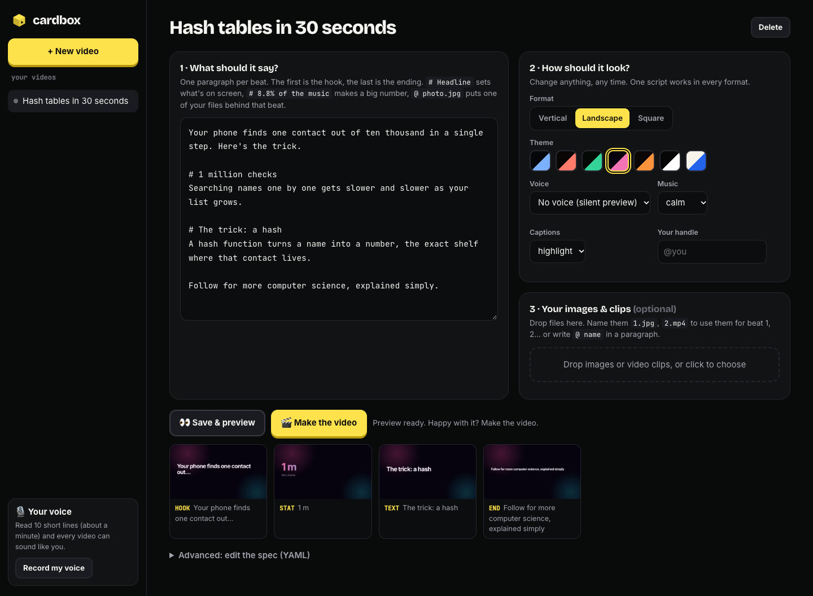
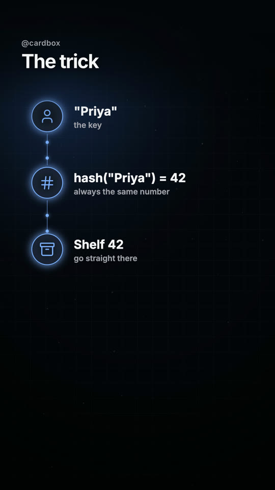
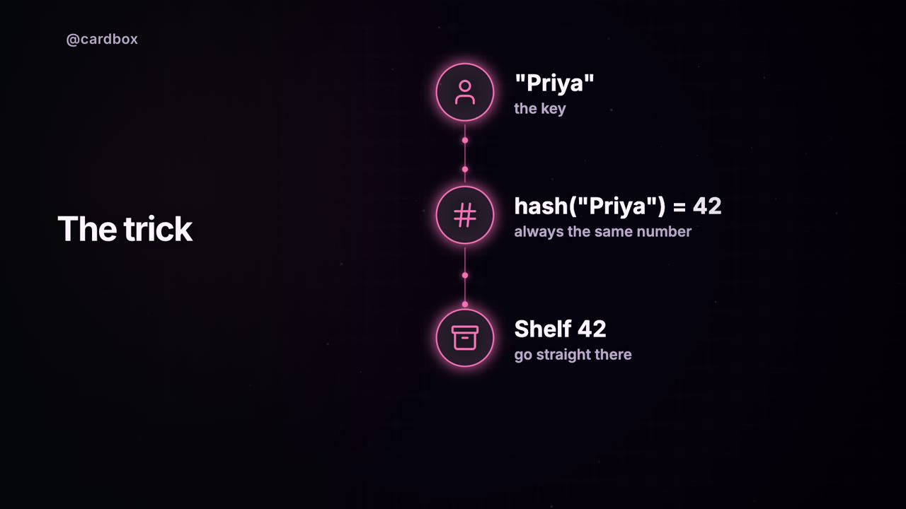
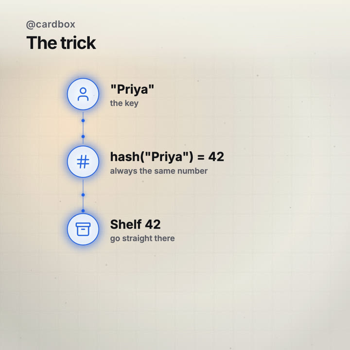

Write what you want to say. No paid AI, no editing. cardbox makes the whole video: visuals, captions, music and the voice. Yours, cloned. Want more? Plug in your AI assistant.
This explainer was made with cardbox. The visuals are cardbox, the voice is my AI clone.
No paid AI needed. Write plain text, and cardbox draws every frame, speaks it in your voice, times the captions to every word, adds music and exports an MP4 that's ready to post. All free, on your own computer.

Install once, then type cardbox. The app opens in your browser. Everything runs on your computer.
Plain text, one paragraph per beat. That's it: no prompts, no paid AI, no timeline.
Vertical, landscape or square. A theme, caption style and music. Drop in your own images or clips if you like.
Preview every frame, then render. You get the MP4 in your own (cloned) voice, plus a caption ready to post.
Write plain text, pick a look, make the video. No paid AI, no API keys, no account. It all runs on your computer.
Connect Claude, Cursor or any MCP app and let it do the heavy lifting, with even more control.
Cloned voices sometimes fumble a word. cardbox transcribes every line it speaks, compares it with your script, and re-records anything that comes out wrong. Automatically.
Cloned locally from a minute of audio. A consent line is always recorded first.
Write on: billion, and the counter starts the moment you say "billion".
Openly licensed images only, from Openverse and Wikimedia Commons. Credits written for you.
A soundtrack synthesized for every video, dipping under your voice.
Counters, charts, flows, terminals, AI chats, logo reveals, format morphs, photo push-ins and more, with 1,900 icons.
Dark, neon, sunset, paper and more. Any accent color, sans or mono, captions that pop or stay minimal.
Change one word, format: landscape, and every beat re-lays itself out: headline beside the animation for YouTube, stacked for the LinkedIn feed.



Optional: add cardbox to Claude, Cursor or any MCP client. It writes the script, looks at preview frames before rendering, finds images, helps you record your voice, and renders.
// claude_desktop_config.json · .cursor/mcp.json { "mcpServers": { "cardbox": { "command": "cardbox", "args": ["mcp"] } } }
A Go server that queues renders, streams their progress live and hands back the video. One binary and SQLite.
# submit $ curl -X POST localhost:8080/v1/renders \ -H "Content-Type: application/yaml" \ --data-binary @video.yaml {"id": "rnd_e3016b6c59a9", "status": "queued"} # watch it render, live $ curl -N localhost:8080/v1/renders/rnd_e3016b6c59a9/events event: progress {"stage":"voice","done":0,"total":3} event: progress {"stage":"draw","done":2,"total":3} event: status {"status":"succeeded","seconds":11.4} # download $ curl -O localhost:8080/v1/renders/rnd_e3016b6c59a9/video
Free and open source. No paid AI needed. Your voice never leaves your machine.